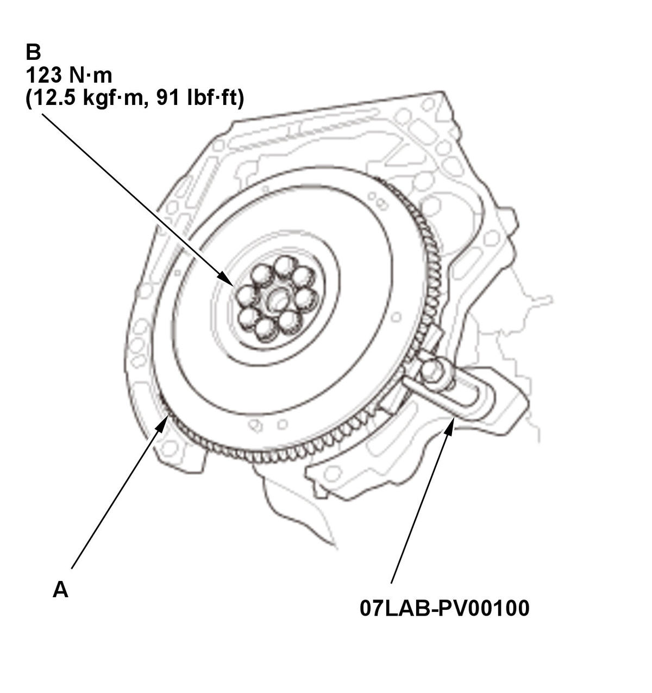
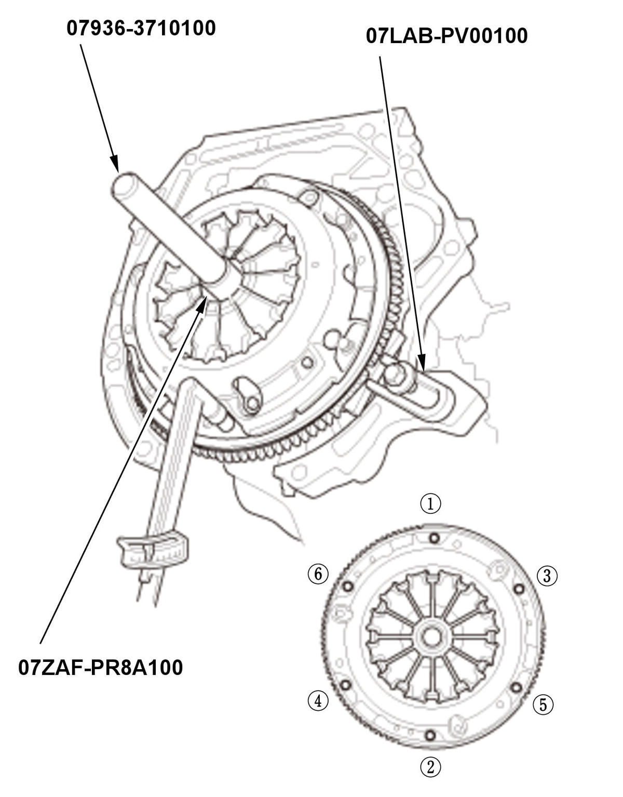
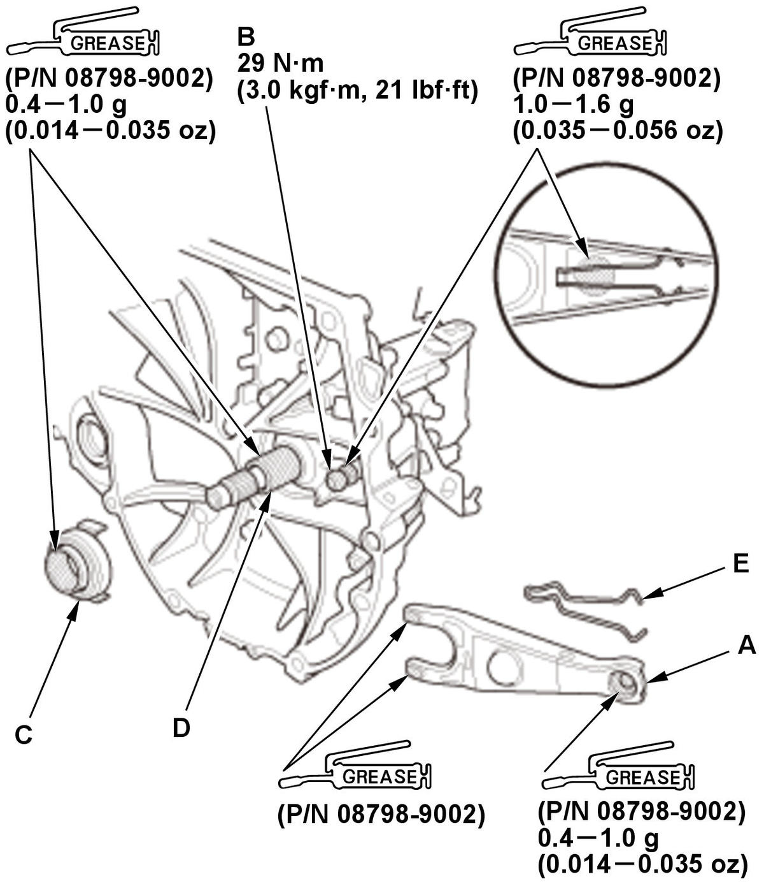

Clutch Removal and Installation (K20C2 (M/T)) (2016 2017 2018 2019 2020): Installation
Engine Side
- Flywheel - InstallFig 1: Tightening Flywheel Mounting Bolts In Crisscross Pattern In Several Steps With Torque Specifications (K20C2 - M/T - 2016-20)

Courtesy of HONDA, U.S.A., INC.1. Install the flywheel (A) on the crankshaft, and install the mounting bolts finger-tight. 2. Install the ring gear holder.
3. Torque the flywheel mounting bolts (B) in a crisscross pattern in several steps.
- Clutch Disc - Install
1. Apply super high temp urea grease (P/N 08798-9002) to the splines (A) of the clutch disc (B). NOTE: Wipe off any excess grease.
2. Temporarily install the clutch disc onto the splines of the transmission mainshaft. Make sure the clutch disc slides freely on the mainshaft.
3. Install the clutch disc using the clutch alignment shaft and the remover handle.
- Pressure Plate - Install
1. Install the pressure plate (A) and the mounting bolts (B) finger-tight. - Pressure Plate Mounting Bolt - TightenFig 2: Tightening Pressure Plate Mounting Bolts In Crisscross Pattern In Several Steps With Tightening Sequence (K20C2 - M/T - 2016-20)

Courtesy of HONDA, U.S.A., INC.1. Torque the pressure plate mounting bolts in a crisscross pattern. Tighten the bolts in several steps to prevent warping the diaphragm spring. Make sure that there is not clearance between the pressure plate and the flywheel. 2. Remove the ring gear holder, the clutch alignment shaft, and the remover handle.
3. Make sure the diaphragm spring fingers are all the same height.
4. Do the release bearing inspection, and replace it if necessary.
Specified Torque: 26 N.m (2.7 kgf.m, 19 lbf.ft) - Transmission - Install
Transmission Side
- Release Bearing - InstallFig 3: Exploded View Of Release Bearing Components With Torque Specifications (K20C2 - M/T - 2016-20)

Courtesy of HONDA, U.S.A., INC.1. Apply super high temp urea grease (P/N 08798-9002) to the release fork (A), the release fork bolt (B), the release bearing (C), and the release bearing guide (D) in the shaded areas.
NOTE:- Do not use silicone grease.
- Replace the release fork bolt if necessary.
2. Set the release fork set spring (E).
3. With the release fork (A) slide between the release bearing pawls (B), install the release bearing on the mainshaft while inserting the release fork through the hole in the clutch housing. 4. Align the detent (C) of the release fork with the release fork bolt (D), then press the detent of the release fork over the release fork bolt squarely.
5. Install the release fork boot (E). Make sure the boot seals around the release fork and clutch housing.
6. Move the release fork (A) right and left to make sure that it fits properly against the release bearing (B) and that the release bearing slides smoothly. Wipe off any excess grease. - Transmission - Install